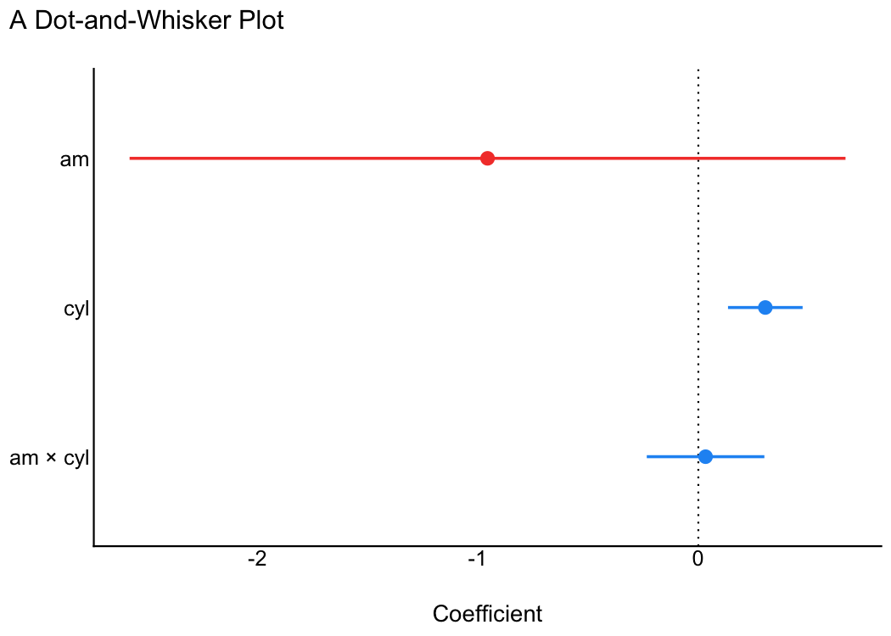
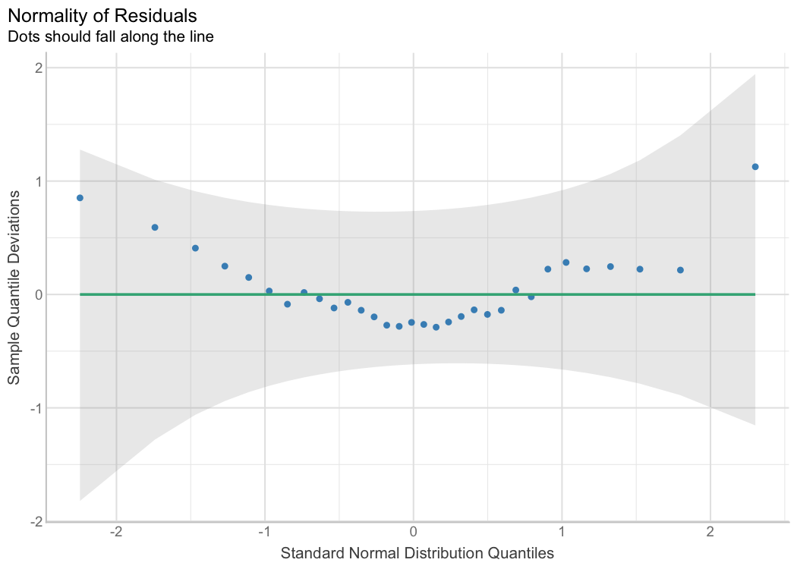
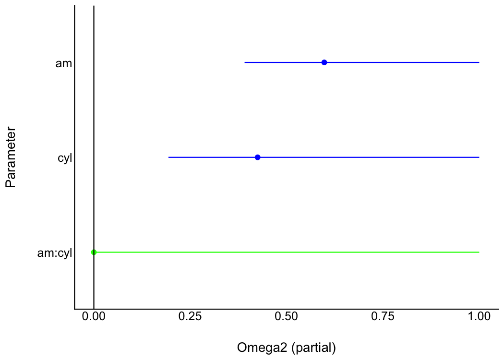
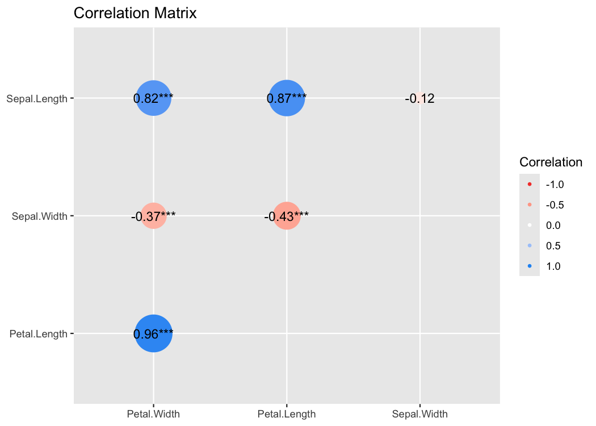
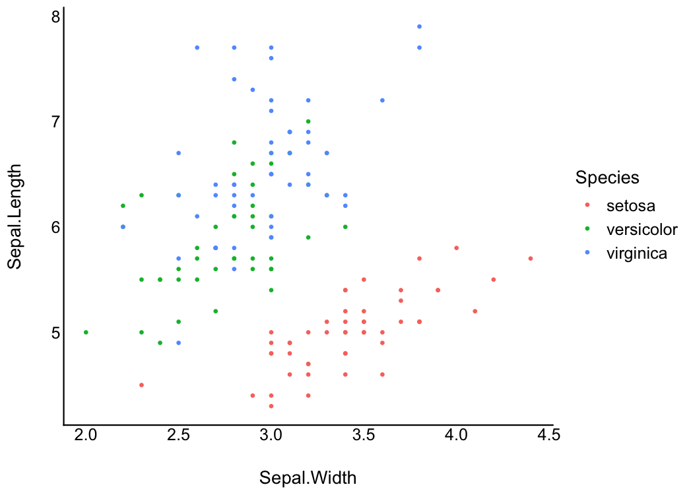

“Damned are those who believe without seeing”
easystats is a collection of packages that operate in synergy to provide a consistent and intuitive syntax when working with statistical models in the R programming language (R Core Team, 2021). Most easystats packages return comprehensive numeric summaries of model parameters and performance. The see package complements these numeric summaries with a host of functions and tools to produce a range of publication-ready visualizations for model parameters, predictions, and performance diagnostics. As a core pillar of easystats, the see package helps users to utilize visualization for more informative, communicable, and well-rounded scientific reporting.
Installation


The see package is available on CRAN, while its latest development version is available on R-universe (from rOpenSci).
| Type | Source | Command |
|---|---|---|
| Release | CRAN | install.packages("see") |
| Development | r-universe | install.packages("see", repos = "https://easystats.r-universe.dev") |
| Development | GitHub | remotes::install_github("easystats/see") |
Once you have downloaded the package, you can then load it using:
Tip
Instead of
library(see), uselibrary(easystats). This will make all features of the easystats-ecosystem available.To stay updated, use
easystats::install_latest().
Plotting functions for ‘easystats’ packages


Below we present one or two plotting methods for each easystats package, but many other methods are available. Interested readers are encouraged to explore the range of examples on the package website.
parameters
The parameters package converts summaries of regression model objects into data frames (Lüdecke et al., 2020). The see package can take this transformed object and, for example, create a dot-and-whisker plot for the extracted regression estimates simply by passing the parameters class object to plot().
library(parameters)
library(see)
model <- lm(wt ~ am * cyl, data = mtcars)
plot(parameters(model))
As see outputs objects of class ggplot, ggplot2 functions can be added as layers to the plot the same as with all other ggplot2 visualizations. For example, we might add a title using labs() from ggplot2.
library(parameters)
library(see)
model <- lm(wt ~ am * cyl, data = mtcars)
plot(parameters(model)) +
ggplot2::labs(title = "A Dot-and-Whisker Plot")
Plotting functions for the parameters package are demonstrated in this vignette.
bayestestR
Similarly, for Bayesian regression model objects, which are handled by the bayestestR package (Makowski et al., 2019), the see package provides special plotting methods relevant for Bayesian models (e.g., Highest Density Interval, or HDI). Users can fit the model and pass the model results, extracted via bayestestR, to plot().
library(bayestestR)
library(rstanarm)
library(see)
set.seed(123)
model <- stan_glm(wt ~ mpg, data = mtcars, refresh = 0)
result <- hdi(model, ci = c(0.5, 0.75, 0.89, 0.95))
plot(result)
Plotting functions for the bayestestR package are demonstrated in this vignette.
performance
The performance package is primarily concerned with checking regression model assumptions (Lüdecke et al., 2021). The see package offers tools to visualize these assumption checks, such as the normality of residuals. Users simply pass the fit model object to the relevant performance function (check_normality() in the example below). Then, this result can be passed to plot() to produce a ggplot2 visualization of the check on normality of the residuals.
library(performance)
library(see)
model <- lm(wt ~ mpg, data = mtcars)
check <- check_normality(model)
plot(check, type = "qq")
Plotting functions for the performance package are demonstrated in this vignette.
effectsize
The effectsize package computes a variety of effect size metrics for fitted models to assesses the practical importance of observed effects (Ben-Shachar et al., 2020). In conjunction with see, users are able to visualize the magnitude and uncertainty of effect sizes by passing the model object to the relevant effectsize function (omega_squared() in the following example), and then to plot().
library(effectsize)
library(see)
model <- aov(wt ~ am * cyl, data = mtcars)
plot(omega_squared(model))
Plotting functions for the effectsize package are demonstrated in this vignette.
modelbased
The modelbased package computes model-based estimates and predictions from fitted models (Makowski et al., 2020a). see provides methods to quickly visualize these model predictions. For the following example to work, you need to have installed the emmeans package first.
library(modelbased)
library(see)
data(mtcars)
mtcars$gear <- as.factor(mtcars$gear)
model <- lm(mpg ~ wt * gear, data = mtcars)
predicted <- estimate_expectation(model, data = "grid")
plot(predicted, show_data = TRUE)
One can also visualize marginal means (i.e., the mean at each factor level averaged over other predictors) using estimate_means(), that is then passed to plot().
means <- estimate_means(model)
plot(means)
Plotting functions for the modelbased package are demonstrated in this vignette.
correlation
The correlation package provides a unified syntax and human-readable code to carry out many types of correlation analysis (Makowski et al., 2020b). A user can run summary(correlation(data)) to create a construct a correlation matrix for the variables in a dataframe. With see, this matrix can be passed to plot() to visualize these correlations in a correlation matrix.
library(correlation)
library(see)
results <- summary(correlation(iris))
plot(results, show_data = "points")
Plotting functions for the correlation package are demonstrated in this vignette.
Themes
Modern
library(ggplot2)
ggplot(iris, aes(x = Sepal.Width, y = Sepal.Length, color = Species)) +
geom_point2() +
theme_modern()
Lucid
library(ggplot2)
p <- ggplot(iris, aes(x = Sepal.Width, y = Sepal.Length, color = Species)) +
geom_point2()
p + theme_lucid()


Palettes
This is just one example of the available palettes. See this vignette for a detailed overview of palettes and color scales.
Material design
p1 <- ggplot(iris, aes(x = Species, y = Sepal.Length, fill = Species)) +
geom_boxplot() +
theme_modern(axis.text.angle = 45) +
scale_fill_material_d()
p2 <- ggplot(iris, aes(x = Species, y = Sepal.Length, fill = Species)) +
geom_violin() +
theme_modern(axis.text.angle = 45) +
scale_fill_material_d(palette = "ice")
p3 <- ggplot(iris, aes(x = Petal.Length, y = Petal.Width, color = Sepal.Length)) +
geom_point2() +
theme_modern() +
scale_color_material_c(palette = "rainbow")
Geoms
Better looking points
geom_points2() and geom_jitter2() allow points without borders and contour.
normal <- ggplot(iris, aes(x = Petal.Width, y = Sepal.Length)) +
geom_point(size = 8, alpha = 0.3) +
theme_modern()
new <- ggplot(iris, aes(x = Petal.Width, y = Sepal.Length)) +
geom_point2(size = 8, alpha = 0.3) +
theme_modern()
plots(normal, new, n_columns = 2)
Half-violin Half-dot plot
Create a half-violin half-dot plot, useful for visualising the distribution and the sample size at the same time.
ggplot(iris, aes(x = Species, y = Sepal.Length, fill = Species)) +
geom_violindot(fill_dots = "black") +
theme_modern() +
scale_fill_material_d()
Radar chart (Spider plot)
library(poorman)
library(datawizard)
# prepare the data in tidy format
data <- iris %>%
group_by(Species) %>%
summarise(across(everything(), mean)) %>%
reshape_longer(c("Sepal.Length", "Sepal.Width", "Petal.Length", "Petal.Width"))
data %>%
ggplot(aes(
x = name,
y = value,
color = Species,
group = Species,
fill = Species
)) +
geom_polygon(linewidth = 1, alpha = 0.1) +
coord_radar() +
theme_radar()
Contributing and Support
In case you want to file an issue or contribute in another way to the package, please follow this guide. For questions about the functionality, you may either contact us via email or also file an issue.
Code of Conduct
Please note that this project is released with a Contributor Code of Conduct. By participating in this project you agree to abide by its terms.